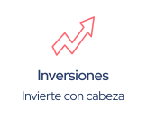
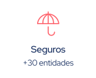

En Fintonic te ayudamos a conseguir el préstamo que necesitas y a encontrar ahorros para tu dinero.
Más de 1.000 millones de € en préstamos para nuestros usuarios
Sin letra pequeña
En 15 minutos
Sin papeleo, sólo con tu cuenta
Más de 1.000 millones de € en préstamos para nuestros usuarios
Sin letra pequeña
En 15 minutos
Sin papeleo, sólo con tu cuenta
Entidades TOP de crédito
Entre más de 15 entidades
Lo tienes en tu cuenta, en tan solo 24 horas.
100% online
Realiza tu solicitud en tan solo unos minutos y sin papelos.
Pagarás lo que puedas pagar
Hecho a la medida de tu capacidad financiera.


ENTIDADES TOP
Las mejores entidades para cada tipo de crédito
Más información
Solicitar un préstamo es la mejor opción para financiar tus proyectos e ilusiones, o posibles gastos extra que puedan surgir. Es el producto bancario que te permitirá recibir una determinada cantidad de dinero acordada entre el solicitante, tú, y prestatario o entidad bancaria que vaya a ofrecer el préstamo online.
¡Por supuesto! Estos productos financieros son para toooooodo el mundo que necesite un empujoncito en algún momento. Y todo es mejor cuando puedes conseguir tu préstamo online y sin papeleos.
Con el simulador de Fintonic puedes solicitar financiación sin compromiso. Negociamos con entidades TOP para conseguirte el préstamo personal que mejor se ajusta a ti. El proceso es 100% online, SIN papeleos, SIN letra pequeña y SIN salir de casa.
En Fintonic encontrarás todas las facilidades para devolver tu préstamo personal en el plazo que mejor se adapte a ti, haciéndolo en cómodas cuotas.
Las diferentes entidades con las que trabajamos ofrecen duraciones desde los 3 meses hasta los 120 meses, para que puedas conseguir financiación 100% adaptada a ti.
Además, tendrás la oportunidad de amortizar total o parcialmente tu préstamo personal online. Las comisiones por la amortización del préstamo depende de la entidad, en algunos casos no hay comisiones y otros suelen tener un coste del 1%.
La tramitación del préstamo dura unos 5 minutos. ¡Préstamos online al instante!
Puedes solicitar desde 2.001€ hasta 50.000€, con un TIN desde un 5,83% (TAE 5,99%) hasta un máximo de 17,95% (TAE 19,95%), para devolver en un plazo de 12 a 120 meses. También puedes solicitar desde 500€ hasta 2.000€, con un TIN desde un 5,83% (TAE 5,99%) hasta un máximo de 95% TIN (TAE 278.36 %), para devolver en un plazo de 3 a 84 meses.
Calculamos tu capacidad financiera o FinScore con la información de tu cuenta bancaria principal, que deberás añadir a Fintonic tras registrarte. Es un proceso 100% seguro que dura menos de un minuto. Añadir tu cuenta es necesario también para validar tus datos y conseguir tu préstamo online con Fintonic.
La oferta de financiación es orientativa, no vinculante y tiene que ser aprobada por la entidad financiera que te ofrezca el préstamo personal después de realizar las comprobaciones necesarias.
Por tu seguridad podemos solicitarte algunos documentos para identificarte o asegurar que eres el titular de la cuenta de la que se obtiene el FinScore. Podrás conseguir tu préstamo online rápido sin papeleos, basta con una en versión digital, una foto o pantallazo nos sirve.
Sobre tus datos, tienes derecho a acceder, rectificar, suprimir, oponerte, limitarlos y portarlos frente a Fintonic Servicios Financieros, sito en Paseo de la Castellana 163, Madrid. Puedes escribir a [email protected]. Más información sobre protección de datos, aquí.
Un ejemplo representativo de préstamo: Julián contrata un préstamo personal de 30.000€ a 60 meses (5 años), al 7,95% TIN (8,25% TAE). En total devolverá 36.626,34€, repartidos en 60 cuotas de 607,57€ cada una. Lo utilizará para reformar la casa y dejar, al fin, el baño a su gusto. Y en tu caso, ¿cuál es tu proyecto?
Cuando solicitas un préstamo pagas los intereses por el total del capital prestado, en cambio, cuando solicitas un crédito sólo pagas intereses por el dinero que has consumido del total que la entidad te ha prestado. Otra diferencia son los plazos de devolución, en el caso de los préstamos suelen ser de meses o años, mientras que la devolución de los créditos es más rápida.
En Fintonic, completas una única solicitud de préstamo y nosotros nos encargamos de conseguir tu préstamo entre más de 15 entidades financieras, entre las que se encuentran: Santander, BBVA, Bankinter, Unicaja, Wanna, Younited, Sofinco, Fidinda, Cajasiete, Wizink, Cetelem, Monedo Now, Capital on Tap, Zaplo, Gedescoche, Ibancar o Movistar Money.
Cuando solicitas un préstamo, es importante cumplir los requisitos que piden las entidades financieras. Cada entidad financiera, tiene distintos requisitos, por eso es importante hacer la solicitud a través de Fintonic, porque nosotros nos encargamos de conseguirte las mejores condiciones entre todas nuestras entidades. Los requisitos que analizan las entidades antes de concederte el préstamo, incluye tu nivel de ingresos y tu antigüedad laboral, tu nivel de endeudamiento previo, que no estés en ficheros de morosidad por haber tenido impagos en el pasado, además de otras variables como si tienes una vivienda en propiedad y tu tipo de contrato laboral. En todo caso, en Fintonic trabajamos para ser capaces de encontrar el mejor préstamo adaptado a tu perfil, sea cual sea tu situación.
En Fintonic, no te vamos a pedir ninguna documentación ni papel, simplemente necesitaremos una foto de tu DNI o documento de identidad para la firma del contrato de préstamo, una vez te lo hayamos conseguido.
Si, deberás especificar el motivo por el que quieras tu préstamo al empezar la solicitud.
¡Por supuesto! Tener deudas no es un motivo que afecte directamente a tu solicitud de préstamo. De hecho, muchas entidades tienen preferencia por los clientes que ya han contratado productos de financiación en el pasado, ya que demuestra capacidad y voluntad de pago.
¡Claro que no! Además de los bancos, hay muchas entidades financieras que pueden resolver tus necesidades de financiación, y con muy buenas condiciones.
No hay un banco mejor o peor. La entidad que te conceda el préstamo que tu quieres y con las mejores condiciones será la mejor, independientemente de su marca o tamaño.
El TAE, o tasa anual equivalente, indica el coste real de la operación en un periodo anual. Es una referencia utilizada como orientación de cuál es el coste real de los préstamos de interés fijo. Explicado de una forma sencilla, es la cantidad real que vas a tener que pagar por la cantidad de dinero que la entidad te ha prestado.
El TIN, tipo de interés nominal, es el interés que la entidad financiera percibe por el aplazamiento de los pagos. Si solicitas un préstamo personal, este interés se te cobrará cada mes en tu recibo.
Si, es un proceso normal. En Fintonic, tenemos muchas entidades con las que puedes cancelar tu préstamo personal sin ninguna comisión y las entidades con las que trabajamos tienen costes de cancelación asumibles.
¡Por supuesto! En Fintonic trabajamos con muchas entidades con las que te podemos conseguir préstamos con las mejores condiciones.
El FinScore es el primer score de crédito gratuito de España y, en Fintonic, lo ponemos a tu disposición. Es un índice imparcial e independiente que valora cómo usas y gestionas el dinero, y te dice cómo de bueno o malo eres para los bancos. Te ayuda a conocer las condiciones que te mereces al solicitar tu préstamo personal.
Para mejorar tu FinScore debes seguir los siguientes consejos: gasta por debajo 80%, destina por debajo de 30% de tus ingresos al pago de tus préstamos, ten ahorrado suficiente como para vivir 6 meses sin ingresos, evita descubiertos en tu cuenta y añade otras entidades bancarias. Para saber si estás cumpliendo estos consejos, entra en la app de Fintonic.
Para conseguir tu préstamo personal en Fintonic solo tienes que simular tu préstamo personal, mandarnos una foto de tu DNI por ambas caras y completar unos pocos datos. ¡No te llevará más de 3 minutos!
Uno de los consejos que te damos para mejorar tu FinScore es agregar otras cuentas en las que tengas ahorros y movimientos, por lo que no sería necesario sacarlo de una cuenta para meterlo en otra, solo agregarla a Fintonic. En cambio, si el dinero lo tienes en metálico y puedes ingresarlo, tu FinScore puede crecer, ya que cumplirías con otro de los consejos, contar con ahorros para vivir sin ingresos una temporada.
Solicitamos tus claves de lectura para poder mostrar tus movimientos en la app y darte datos como el Finscore o tu gasto previsto. Con estas claves no se pueden realizar compras, transferencias ni demás operaciones bancarias.
Los préstamos que ofrecemos en Fintonic son préstamos personales para llevar a cabo tus proyectos como reformas en el hogar, comprarte un coche, financiar tus estudios o reunificar tus deudas.